import numpy as np
import matplotlib.pyplot as plt
import sklearn
import sklearn.datasets
from public_tests import *
from init_utils import sigmoid, relu, compute_loss, forward_propagation, backward_propagation
from init_utils import update_parameters, predict, load_dataset, plot_decision_boundary, predict_dec
%matplotlib inline
plt.rcParams['figure.figsize'] = (7.0, 4.0) # set default size of plots
plt.rcParams['image.interpolation'] = 'nearest'
plt.rcParams['image.cmap'] = 'gray'
%load_ext autoreload
%autoreload 2
# load image dataset: blue/red dots in circles
# train_X, train_Y, test_X, test_Y = load_dataset()v1.1
pip install dlai_tools
pip install tensorflow
train_X, train_Y, test_X, test_Y = load_dataset()
For this classifier, you want to separate the blue dots from the red dots.
You’ll use a 3-layer neural network (already implemented for you). These are the initialization methods you’ll experiment with: - Zeros initialization – setting initialization = "zeros" in the input argument. - Random initialization – setting initialization = "random" in the input argument. This initializes the weights to large random values.
- He initialization – setting initialization = "he" in the input argument. This initializes the weights to random values scaled according to a paper by He et al., 2015.
Instructions: Instructions: Read over the code below, and run it. In the next part, you’ll implement the three initialization methods that this model() calls.
def model(X, Y, learning_rate = 0.01, num_iterations = 15000, print_cost = True, initialization = "he"):
"""
Implements a three-layer neural network: LINEAR->RELU->LINEAR->RELU->LINEAR->SIGMOID.
Arguments:
X -- input data, of shape (2, number of examples)
Y -- true "label" vector (containing 0 for red dots; 1 for blue dots), of shape (1, number of examples)
learning_rate -- learning rate for gradient descent
num_iterations -- number of iterations to run gradient descent
print_cost -- if True, print the cost every 1000 iterations
initialization -- flag to choose which initialization to use ("zeros","random" or "he")
Returns:
parameters -- parameters learnt by the model
"""
grads = {}
costs = [] # to keep track of the loss
m = X.shape[1] # number of examples
layers_dims = [X.shape[0], 10, 5, 1]
# Initialize parameters dictionary.
if initialization == "zeros":
parameters = initialize_parameters_zeros(layers_dims)
elif initialization == "random":
parameters = initialize_parameters_random(layers_dims)
elif initialization == "he":
parameters = initialize_parameters_he(layers_dims)
# Loop (gradient descent)
for i in range(num_iterations):
# Forward propagation: LINEAR -> RELU -> LINEAR -> RELU -> LINEAR -> SIGMOID.
a3, cache = forward_propagation(X, parameters)
# Loss
cost = compute_loss(a3, Y)
# Backward propagation.
grads = backward_propagation(X, Y, cache)
# Update parameters.
parameters = update_parameters(parameters, grads, learning_rate)
# Print the loss every 1000 iterations
if print_cost and i % 1000 == 0:
print("Cost after iteration {}: {}".format(i, cost))
costs.append(cost)
# plot the loss
plt.plot(costs)
plt.ylabel('cost')
plt.xlabel('iterations (per hundreds)')
plt.title("Learning rate =" + str(learning_rate))
plt.show()
return parametersThere are two types of parameters to initialize in a neural network: - the weight matrices \((W^{[1]}, W^{[2]}, W^{[3]}, ..., W^{[L-1]}, W^{[L]})\) - the bias vectors \((b^{[1]}, b^{[2]}, b^{[3]}, ..., b^{[L-1]}, b^{[L]})\)
### Exercise 1 - initialize_parameters_zeros
Implement the following function to initialize all parameters to zeros. You’ll see later that this does not work well since it fails to “break symmetry,” but try it anyway and see what happens. Use np.zeros((..,..)) with the correct shapes.
def initialize_parameters_zeros(layers_dims):
"""
Arguments:
layer_dims -- python array (list) containing the size of each layer.
Returns:
parameters -- python dictionary containing your parameters "W1", "b1", ..., "WL", "bL":
W1 -- weight matrix of shape (layers_dims[1], layers_dims[0])
b1 -- bias vector of shape (layers_dims[1], 1)
...
WL -- weight matrix of shape (layers_dims[L], layers_dims[L-1])
bL -- bias vector of shape (layers_dims[L], 1)
"""
parameters = {}
L = len(layers_dims) # number of layers in the network
for l in range(1, L):
#(≈ 2 lines of code)
# parameters['W' + str(l)] =
# parameters['b' + str(l)] =
# YOUR CODE STARTS HERE
parameters['W' + str(l)] = np.zeros((layers_dims[l], layers_dims[l-1]))
parameters['b' + str(l)] = np.zeros((layers_dims[l], 1))
# YOUR CODE ENDS HERE
return parametersparameters = initialize_parameters_zeros([3, 2, 1])
print("W1 = " + str(parameters["W1"]))
print("b1 = " + str(parameters["b1"]))
print("W2 = " + str(parameters["W2"]))
print("b2 = " + str(parameters["b2"]))
initialize_parameters_zeros_test(initialize_parameters_zeros)W1 = [[0. 0. 0.]
[0. 0. 0.]]
b1 = [[0.]
[0.]]
W2 = [[0. 0.]]
b2 = [[0.]]
All tests passed.Run the following code to train your model on 15,000 iterations using zeros initialization.
parameters = model(train_X, train_Y, initialization = "zeros")
print ("On the train set:")
predictions_train = predict(train_X, train_Y, parameters)
print ("On the test set:")
predictions_test = predict(test_X, test_Y, parameters)Cost after iteration 0: 0.6931471805599453
Cost after iteration 1000: 0.6931471805599453
Cost after iteration 2000: 0.6931471805599453
Cost after iteration 3000: 0.6931471805599453
Cost after iteration 4000: 0.6931471805599453
Cost after iteration 5000: 0.6931471805599453
Cost after iteration 6000: 0.6931471805599453
Cost after iteration 7000: 0.6931471805599453
Cost after iteration 8000: 0.6931471805599453
Cost after iteration 9000: 0.6931471805599453
Cost after iteration 10000: 0.6931471805599453
Cost after iteration 11000: 0.6931471805599453
Cost after iteration 12000: 0.6931471805599453
Cost after iteration 13000: 0.6931471805599453
Cost after iteration 14000: 0.6931471805599453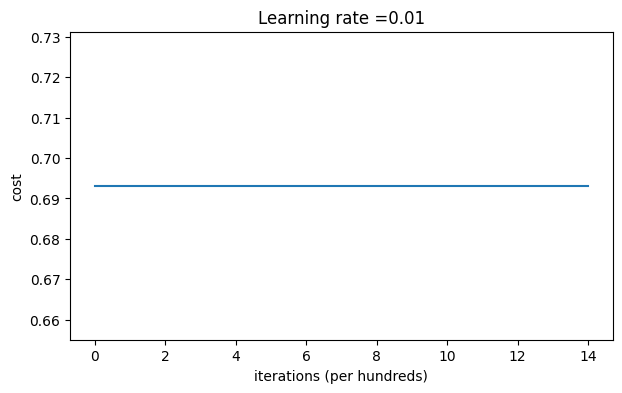
On the train set:
Accuracy: 0.5
On the test set:
Accuracy: 0.5The performance is terrible, the cost doesn’t decrease, and the algorithm performs no better than random guessing. Why? Take a look at the details of the predictions and the decision boundary:
print ("predictions_train = " + str(predictions_train))
print ("predictions_test = " + str(predictions_test))predictions_train = [[0 0 0 0 0 0 0 0 0 0 0 0 0 0 0 0 0 0 0 0 0 0 0 0 0 0 0 0 0 0 0 0 0 0 0 0
0 0 0 0 0 0 0 0 0 0 0 0 0 0 0 0 0 0 0 0 0 0 0 0 0 0 0 0 0 0 0 0 0 0 0 0
0 0 0 0 0 0 0 0 0 0 0 0 0 0 0 0 0 0 0 0 0 0 0 0 0 0 0 0 0 0 0 0 0 0 0 0
0 0 0 0 0 0 0 0 0 0 0 0 0 0 0 0 0 0 0 0 0 0 0 0 0 0 0 0 0 0 0 0 0 0 0 0
0 0 0 0 0 0 0 0 0 0 0 0 0 0 0 0 0 0 0 0 0 0 0 0 0 0 0 0 0 0 0 0 0 0 0 0
0 0 0 0 0 0 0 0 0 0 0 0 0 0 0 0 0 0 0 0 0 0 0 0 0 0 0 0 0 0 0 0 0 0 0 0
0 0 0 0 0 0 0 0 0 0 0 0 0 0 0 0 0 0 0 0 0 0 0 0 0 0 0 0 0 0 0 0 0 0 0 0
0 0 0 0 0 0 0 0 0 0 0 0 0 0 0 0 0 0 0 0 0 0 0 0 0 0 0 0 0 0 0 0 0 0 0 0
0 0 0 0 0 0 0 0 0 0 0 0]]
predictions_test = [[0 0 0 0 0 0 0 0 0 0 0 0 0 0 0 0 0 0 0 0 0 0 0 0 0 0 0 0 0 0 0 0 0 0 0 0
0 0 0 0 0 0 0 0 0 0 0 0 0 0 0 0 0 0 0 0 0 0 0 0 0 0 0 0 0 0 0 0 0 0 0 0
0 0 0 0 0 0 0 0 0 0 0 0 0 0 0 0 0 0 0 0 0 0 0 0 0 0 0 0]]plt.title("Model with Zeros initialization")
axes = plt.gca()
axes.set_xlim([-1.5,1.5])
axes.set_ylim([-1.5,1.5])
plot_decision_boundary(lambda x: predict_dec(parameters, x.T), train_X, train_Y)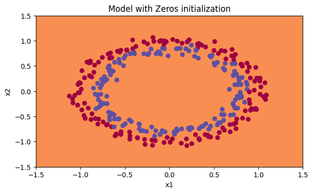
For a comprehensive explanation of this, you can read Paul Mielke’s post, Symmetry Breaking versus Zero Initialization.
A simple explanation is provided below:
Note: For sake of simplicity calculations below are done using only one example at a time.
Since the weights and biases are zero, multiplying by the weights creates the zero vector which gives 0 when the activation function is ReLU. As z = 0
\[a = ReLU(z) = max(0, z) = 0\]
At the classification layer, where the activation function is sigmoid you then get (for either input):
\[\sigma(z) = \frac{1}{ 1 + e^{-(z)}} = \frac{1}{2} = y_{pred}\]
As for every example you are getting a 0.5 chance of it being true our cost function becomes helpless in adjusting the weights.
Your loss function: \[ \mathcal{L}(a, y) = - y \ln(y_{pred}) - (1-y) \ln(1-y_{pred})\]
For y=1, y_pred=0.5 it becomes:
\[ \mathcal{L}(0, 1) = - (1) \ln(\frac{1}{2}) = 0.6931471805599453\]
For y=0, y_pred=0.5 it becomes:
\[ \mathcal{L}(0, 0) = - (1) \ln(\frac{1}{2}) = 0.6931471805599453\]
As you can see with the prediction being 0.5 whether the actual (y) value is 1 or 0 you get the same loss value for both, so none of the weights get adjusted and you are stuck with the same old value of the weights.
This is why you can see that the model is predicting 0 for every example! No wonder it’s doing so badly.
In general, initializing all the weights to zero results in the network failing to break symmetry. This means that every neuron in each layer will learn the same thing, so you might as well be training a neural network with \(n^{[l]}=1\) for every layer. This way, the network is no more powerful than a linear classifier like logistic regression.
What you should remember: - The weights \(W^{[l]}\) should be initialized randomly to break symmetry. - However, it’s okay to initialize the biases \(b^{[l]}\) to zeros. Symmetry is still broken so long as \(W^{[l]}\) is initialized randomly.
To break symmetry, initialize the weights randomly. Following random initialization, each neuron can then proceed to learn a different function of its inputs. In this exercise, you’ll see what happens when the weights are initialized randomly, but to very large values.
### Exercise 2 - initialize_parameters_random
Implement the following function to initialize your weights to large random values (scaled by *10) and your biases to zeros. Use np.random.randn(..,..) * 10 for weights and np.zeros((.., ..)) for biases. You’re using a fixed np.random.seed(..) to make sure your “random” weights match ours, so don’t worry if running your code several times always gives you the same initial values for the parameters.
def initialize_parameters_random(layers_dims):
"""
Arguments:
layer_dims -- python array (list) containing the size of each layer.
Returns:
parameters -- python dictionary containing your parameters "W1", "b1", ..., "WL", "bL":
W1 -- weight matrix of shape (layers_dims[1], layers_dims[0])
b1 -- bias vector of shape (layers_dims[1], 1)
...
WL -- weight matrix of shape (layers_dims[L], layers_dims[L-1])
bL -- bias vector of shape (layers_dims[L], 1)
"""
np.random.seed(3) # This seed makes sure your "random" numbers will be the as ours
parameters = {}
L = len(layers_dims) # integer representing the number of layers
for l in range(1, L):
#(≈ 2 lines of code)
# parameters['W' + str(l)] =
# parameters['b' + str(l)] =
# YOUR CODE STARTS HERE
parameters['W' + str(l)] = np.random.randn(layers_dims[l], layers_dims[l-1])*10
parameters['b' + str(l)] = np.zeros((layers_dims[l], 1))
# YOUR CODE ENDS HERE
return parametersparameters = initialize_parameters_random([3, 2, 1])
print("W1 = " + str(parameters["W1"]))
print("b1 = " + str(parameters["b1"]))
print("W2 = " + str(parameters["W2"]))
print("b2 = " + str(parameters["b2"]))
initialize_parameters_random_test(initialize_parameters_random)W1 = [[ 17.88628473 4.36509851 0.96497468]
[-18.63492703 -2.77388203 -3.54758979]]
b1 = [[0.]
[0.]]
W2 = [[-0.82741481 -6.27000677]]
b2 = [[0.]]
All tests passed.Run the following code to train your model on 15,000 iterations using random initialization.
parameters = model(train_X, train_Y, initialization = "random")
print ("On the train set:")
predictions_train = predict(train_X, train_Y, parameters)
print ("On the test set:")
predictions_test = predict(test_X, test_Y, parameters)Cost after iteration 0: inf
Cost after iteration 1000: 0.6243608083761976
Cost after iteration 2000: 0.5979255420418802
Cost after iteration 3000: 0.5636974033624995
Cost after iteration 4000: 0.550129435783533
Cost after iteration 5000: 0.5444127596753244
Cost after iteration 6000: 0.5374134745412525
Cost after iteration 7000: 0.4738098425592898
Cost after iteration 8000: 0.3977585829307016
Cost after iteration 9000: 0.3934706020369666
Cost after iteration 10000: 0.39202176138493355
Cost after iteration 11000: 0.3892161604894328
Cost after iteration 12000: 0.3861393388253537
Cost after iteration 13000: 0.3849794626808294
Cost after iteration 14000: 0.38278262086755843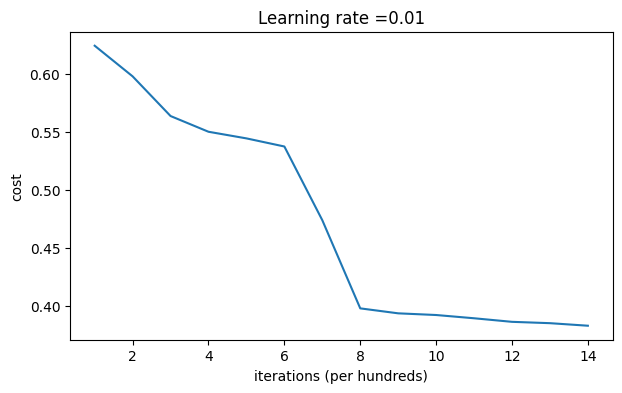
On the train set:
Accuracy: 0.83
On the test set:
Accuracy: 0.86If you see “inf” as the cost after the iteration 0, this is because of numerical roundoff. A more numerically sophisticated implementation would fix this, but for the purposes of this notebook, it isn’t really worth worrying about.
In any case, you’ve now broken the symmetry, and this gives noticeably better accuracy than before. The model is no longer outputting all 0s. Progress!
print (predictions_train)
print (predictions_test)[[1 0 1 1 0 0 1 1 1 1 1 0 1 0 0 1 0 1 1 0 0 0 1 0 1 1 1 1 1 1 0 1 1 0 0 1
1 1 1 1 1 1 1 0 1 1 1 1 0 1 0 1 1 1 1 0 0 1 1 1 1 0 1 1 0 1 0 1 1 1 1 0
0 0 0 0 1 0 1 0 1 1 1 0 0 1 1 1 1 1 1 0 0 1 1 1 0 1 1 0 1 0 1 1 0 1 1 0
1 0 1 1 0 0 1 0 0 1 1 0 1 1 1 0 1 0 0 1 0 1 1 1 1 1 1 1 0 1 1 0 0 1 1 0
0 0 1 0 1 0 1 0 1 1 1 0 0 1 1 1 1 0 1 1 0 1 0 1 1 0 1 0 1 1 1 1 0 1 1 1
1 0 1 0 1 0 1 1 1 1 0 1 1 0 1 1 0 1 1 0 1 0 1 1 1 0 1 1 1 0 1 0 1 0 0 1
0 1 1 0 1 1 0 1 1 0 1 1 1 0 1 1 1 1 0 1 0 0 1 1 0 1 1 1 0 0 0 1 1 0 1 1
1 1 0 1 1 0 1 1 1 0 0 1 0 0 0 1 0 0 0 1 1 1 1 0 0 0 0 1 1 1 1 0 0 1 1 1
1 1 1 1 0 0 0 1 1 1 1 0]]
[[1 1 1 1 0 1 0 1 1 0 1 1 1 0 0 0 0 1 0 1 0 0 1 0 1 0 1 1 1 1 1 0 0 0 0 1
0 1 1 0 0 1 1 1 1 1 0 1 1 1 0 1 0 1 1 0 1 0 1 0 1 1 1 1 1 1 1 1 1 0 1 0
1 1 1 1 1 0 1 0 0 1 0 0 0 1 1 0 1 1 0 0 0 1 1 0 1 1 0 0]]plt.title("Model with large random initialization")
axes = plt.gca()
axes.set_xlim([-1.5,1.5])
axes.set_ylim([-1.5,1.5])
plot_decision_boundary(lambda x: predict_dec(parameters, x.T), train_X, train_Y)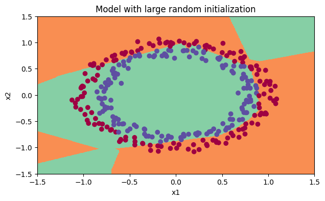
Observations: - The cost starts very high. This is because with large random-valued weights, the last activation (sigmoid) outputs results that are very close to 0 or 1 for some examples, and when it gets that example wrong it incurs a very high loss for that example. Indeed, when \(\log(a^{[3]}) = \log(0)\), the loss goes to infinity. - Poor initialization can lead to vanishing/exploding gradients, which also slows down the optimization algorithm. - If you train this network longer you will see better results, but initializing with overly large random numbers slows down the optimization.
In summary: - Initializing weights to very large random values doesn’t work well. - Initializing with small random values should do better. The important question is, how small should be these random values be? Let’s find out up next!
Optional Read:
The main difference between Gaussian variable (numpy.random.randn()) and uniform random variable is the distribution of the generated random numbers:
- numpy.random.rand() produces numbers in a uniform distribution.
- and numpy.random.randn() produces numbers in a normal distribution.
{kind=link}
{kind=link}
When used for weight initialization, randn() helps most the weights to Avoid being close to the extremes, allocating most of them in the center of the range.
An intuitive way to see it is, for example, if you take the sigmoid() activation function.
{kind=link}
You’ll remember that the slope near 0 or near 1 is extremely small, so the weights near those extremes will converge much more slowly to the solution, and having most of them near the center will speed the convergence.
Finally, try “He Initialization”; this is named for the first author of He et al., 2015. (If you have heard of “Xavier initialization”, this is similar except Xavier initialization uses a scaling factor for the weights \(W^{[l]}\) of sqrt(1./layers_dims[l-1]) where He initialization would use sqrt(2./layers_dims[l-1]).)
### Exercise 3 - initialize_parameters_he
Implement the following function to initialize your parameters with He initialization. This function is similar to the previous initialize_parameters_random(...). The only difference is that instead of multiplying np.random.randn(..,..) by 10, you will multiply it by \(\sqrt{\frac{2}{\text{dimension of the previous layer}}}\), which is what He initialization recommends for layers with a ReLU activation.
def initialize_parameters_he(layers_dims):
"""
Arguments:
layer_dims -- python array (list) containing the size of each layer.
Returns:
parameters -- python dictionary containing your parameters "W1", "b1", ..., "WL", "bL":
W1 -- weight matrix of shape (layers_dims[1], layers_dims[0])
b1 -- bias vector of shape (layers_dims[1], 1)
...
WL -- weight matrix of shape (layers_dims[L], layers_dims[L-1])
bL -- bias vector of shape (layers_dims[L], 1)
"""
np.random.seed(3)
parameters = {}
L = len(layers_dims) - 1 # integer representing the number of layers
for l in range(1, L + 1):
#(≈ 2 lines of code)
# parameters['W' + str(l)] =
# parameters['b' + str(l)] =
# YOUR CODE STARTS HERE
parameters['W' + str(l)] = np.random.randn(layers_dims[l], layers_dims[l-1])*np.sqrt(2/layers_dims[l-1])
parameters['b' + str(l)] = np.zeros((layers_dims[l], 1))
# YOUR CODE ENDS HERE
return parametersparameters = initialize_parameters_he([2, 4, 1])
print("W1 = " + str(parameters["W1"]))
print("b1 = " + str(parameters["b1"]))
print("W2 = " + str(parameters["W2"]))
print("b2 = " + str(parameters["b2"]))
initialize_parameters_he_test(initialize_parameters_he)
# parametersW1 = [[ 1.78862847 0.43650985]
[ 0.09649747 -1.8634927 ]
[-0.2773882 -0.35475898]
[-0.08274148 -0.62700068]]
b1 = [[0.]
[0.]
[0.]
[0.]]
W2 = [[-0.03098412 -0.33744411 -0.92904268 0.62552248]]
b2 = [[0.]]
All tests passed.Expected output
W1 = [[ 1.78862847 0.43650985]
[ 0.09649747 -1.8634927 ]
[-0.2773882 -0.35475898]
[-0.08274148 -0.62700068]]
b1 = [[0.] [0.] [0.] [0.]]
W2 = [[-0.03098412 -0.33744411 -0.92904268 0.62552248]]
b2 = [[0.]]Run the following code to train your model on 15,000 iterations using He initialization.
parameters = model(train_X, train_Y, initialization = "he")
print ("On the train set:")
predictions_train = predict(train_X, train_Y, parameters)
print ("On the test set:")
predictions_test = predict(test_X, test_Y, parameters)Cost after iteration 0: 0.8830537463419761
Cost after iteration 1000: 0.6879825919728063
Cost after iteration 2000: 0.6751286264523371
Cost after iteration 3000: 0.6526117768893807
Cost after iteration 4000: 0.6082958970572937
Cost after iteration 5000: 0.5304944491717495
Cost after iteration 6000: 0.41386458170717944
Cost after iteration 7000: 0.31178034648444414
Cost after iteration 8000: 0.23696215330322556
Cost after iteration 9000: 0.18597287209206836
Cost after iteration 10000: 0.15015556280371808
Cost after iteration 11000: 0.12325079292273551
Cost after iteration 12000: 0.09917746546525931
Cost after iteration 13000: 0.08457055954024283
Cost after iteration 14000: 0.07357895962677367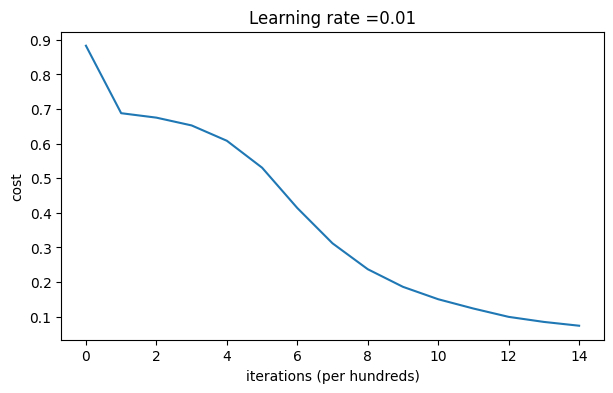
On the train set:
Accuracy: 0.9933333333333333
On the test set:
Accuracy: 0.96plt.title("Model with He initialization")
axes = plt.gca()
axes.set_xlim([-1.5,1.5])
axes.set_ylim([-1.5,1.5])
plot_decision_boundary(lambda x: predict_dec(parameters, x.T), train_X, train_Y)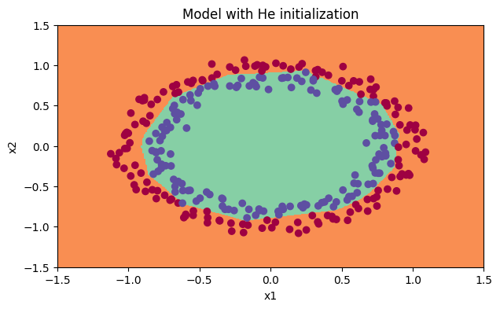
Observations: - The model with He initialization separates the blue and the red dots very well in a small number of iterations.
You’ve tried three different types of initializations. For the same number of iterations and same hyperparameters, the comparison is:
<td>
3-layer NN with zeros initialization
</td>
<td>
50%
</td>
<td>
fails to break symmetry
</td>
<tr>
<td>
3-layer NN with large random initialization
</td>
<td>
83%
</td>
<td>
too large weights
</td>
</tr>
<tr>
<td>
3-layer NN with He initialization
</td>
<td>
99%
</td>
<td>
recommended method
</td>
</tr>| Model | Train accuracy | Problem/Comment |
Congratulations! You’ve completed this notebook on Initialization.
Here’s a quick recap of the main takeaways:
- Different initializations lead to very different results
- Random initialization is used to break symmetry and make sure different hidden units can learn different things
- Resist initializing to values that are too large!
- He initialization works well for networks with ReLU activations
## 8. Regularization. Packages.
### v1.1# import packages
import numpy as np
import matplotlib.pyplot as plt
import sklearn
import sklearn.datasets
import scipy.io
from reg_utils import sigmoid, relu, plot_decision_boundary, initialize_parameters, load_2D_dataset, predict_dec
from reg_utils import compute_cost, predict, forward_propagation, backward_propagation, update_parameters
from testCases import *
from public_tests import *
%matplotlib inline
plt.rcParams['figure.figsize'] = (7.0, 4.0) # set default size of plots
plt.rcParams['image.interpolation'] = 'nearest'
plt.rcParams['image.cmap'] = 'gray'
%load_ext autoreload
%autoreload 2The autoreload extension is already loaded. To reload it, use:
%reload_ext autoreload## 9 - Regularization. Problem Statement
You have just been hired as an AI expert by the French Football Corporation. They would like you to recommend positions where France’s goal keeper should kick the ball so that the French team’s players can then hit it with their head.

They give you the following 2D dataset from France’s past 10 games.
train_X, train_Y, test_X, test_Y = load_2D_dataset()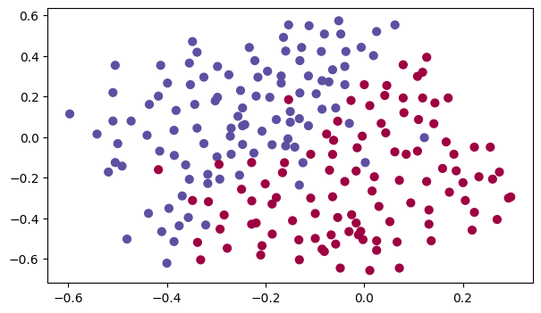
Each dot corresponds to a position on the football field where a football player has hit the ball with his/her head after the French goal keeper has shot the ball from the left side of the football field. - If the dot is blue, it means the French player managed to hit the ball with his/her head - If the dot is red, it means the other team’s player hit the ball with their head
Your goal: Use a deep learning model to find the positions on the field where the goalkeeper should kick the ball.
Analysis of the dataset: This dataset is a little noisy, but it looks like a diagonal line separating the upper left half (blue) from the lower right half (red) would work well.
You will first try a non-regularized model. Then you’ll learn how to regularize it and decide which model you will choose to solve the French Football Corporation’s problem.
You will use the following neural network (already implemented for you below). This model can be used: - in regularization mode – by setting the lambd input to a non-zero value. We use “lambd” instead of “lambda” because “lambda” is a reserved keyword in Python. - in dropout mode – by setting the keep_prob to a value less than one
You will first try the model without any regularization. Then, you will implement: - L2 regularization – functions: “compute_cost_with_regularization()” and “backward_propagation_with_regularization()” - Dropout – functions: “forward_propagation_with_dropout()” and “backward_propagation_with_dropout()”
In each part, you will run this model with the correct inputs so that it calls the functions you’ve implemented. Take a look at the code below to familiarize yourself with the model.
def model(X, Y, learning_rate = 0.3, num_iterations = 30000, print_cost = True, lambd = 0, keep_prob = 1):
"""
Implements a three-layer neural network: LINEAR->RELU->LINEAR->RELU->LINEAR->SIGMOID.
Arguments:
X -- input data, of shape (input size, number of examples)
Y -- true "label" vector (1 for blue dot / 0 for red dot), of shape (output size, number of examples)
learning_rate -- learning rate of the optimization
num_iterations -- number of iterations of the optimization loop
print_cost -- If True, print the cost every 10000 iterations
lambd -- regularization hyperparameter, scalar
keep_prob - probability of keeping a neuron active during drop-out, scalar.
Returns:
parameters -- parameters learned by the model. They can then be used to predict.
"""
grads = {}
costs = [] # to keep track of the cost
m = X.shape[1] # number of examples
layers_dims = [X.shape[0], 20, 3, 1]
# Initialize parameters dictionary.
parameters = initialize_parameters(layers_dims)
# Loop (gradient descent)
for i in range(0, num_iterations):
# Forward propagation: LINEAR -> RELU -> LINEAR -> RELU -> LINEAR -> SIGMOID.
if keep_prob == 1:
a3, cache = forward_propagation(X, parameters)
elif keep_prob < 1:
a3, cache = forward_propagation_with_dropout(X, parameters, keep_prob)
# Cost function
if lambd == 0:
cost = compute_cost(a3, Y)
else:
cost = compute_cost_with_regularization(a3, Y, parameters, lambd)
# Backward propagation.
assert (lambd == 0 or keep_prob == 1) # it is possible to use both L2 regularization and dropout,
# but this assignment will only explore one at a time
if lambd == 0 and keep_prob == 1:
grads = backward_propagation(X, Y, cache)
elif lambd != 0:
grads = backward_propagation_with_regularization(X, Y, cache, lambd)
elif keep_prob < 1:
grads = backward_propagation_with_dropout(X, Y, cache, keep_prob)
# Update parameters.
parameters = update_parameters(parameters, grads, learning_rate)
# Print the loss every 10000 iterations
if print_cost and i % 10000 == 0:
print("Cost after iteration {}: {}".format(i, cost))
if print_cost and i % 1000 == 0:
costs.append(cost)
# plot the cost
plt.plot(costs)
plt.ylabel('cost')
plt.xlabel('iterations (x1,000)')
plt.title("Learning rate =" + str(learning_rate))
plt.show()
return parametersLet’s train the model without any regularization, and observe the accuracy on the train/test sets.
parameters = model(train_X, train_Y)
print ("On the training set:")
predictions_train = predict(train_X, train_Y, parameters)
print ("On the test set:")
predictions_test = predict(test_X, test_Y, parameters)Cost after iteration 0: 0.6557412523481002
Cost after iteration 10000: 0.16329987525724207
Cost after iteration 20000: 0.1385164242326793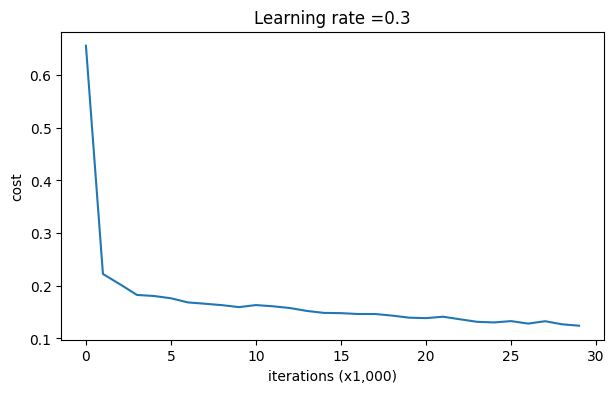
On the training set:
Accuracy: 0.9478672985781991
On the test set:
Accuracy: 0.915The train accuracy is 94.8% while the test accuracy is 91.5%. This is the baseline model (you will observe the impact of regularization on this model). Run the following code to plot the decision boundary of your model.
plt.title("Model without regularization")
axes = plt.gca()
axes.set_xlim([-0.75,0.40])
axes.set_ylim([-0.75,0.65])
plot_decision_boundary(lambda x: predict_dec(parameters, x.T), train_X, train_Y)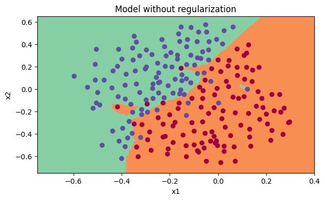
The non-regularized model is obviously overfitting the training set. It is fitting the noisy points! Lets now look at two techniques to reduce overfitting.
The standard way to avoid overfitting is called L2 regularization. It consists of appropriately modifying your cost function, from: \[J = -\frac{1}{m} \sum\limits_{i = 1}^{m} \large{(}\small y^{(i)}\log\left(a^{[L](i)}\right) + (1-y^{(i)})\log\left(1- a^{[L](i)}\right) \large{)} \tag{1}\] To: \[J_{regularized} = \small \underbrace{-\frac{1}{m} \sum\limits_{i = 1}^{m} \large{(}\small y^{(i)}\log\left(a^{[L](i)}\right) + (1-y^{(i)})\log\left(1- a^{[L](i)}\right) \large{)} }_\text{cross-entropy cost} + \underbrace{\frac{1}{m} \frac{\lambda}{2} \sum\limits_l\sum\limits_k\sum\limits_j W_{k,j}^{[l]2} }_\text{L2 regularization cost} \tag{2}\]
Let’s modify your cost and observe the consequences.
### Exercise 4 - compute_cost_with_regularization Implement compute_cost_with_regularization() which computes the cost given by formula (2). To calculate \(\sum\limits_k\sum\limits_j W_{k,j}^{[l]2}\) , use :
np.sum(np.square(Wl))Note that you have to do this for \(W^{[1]}\), \(W^{[2]}\) and \(W^{[3]}\), then sum the three terms and multiply by $ $.
def compute_cost_with_regularization(A3, Y, parameters, lambd):
"""
Implement the cost function with L2 regularization. See formula (2) above.
Arguments:
A3 -- post-activation, output of forward propagation, of shape (output size, number of examples)
Y -- "true" labels vector, of shape (output size, number of examples)
parameters -- python dictionary containing parameters of the model
Returns:
cost - value of the regularized loss function (formula (2))
"""
m = Y.shape[1]
W1 = parameters["W1"]
W2 = parameters["W2"]
W3 = parameters["W3"]
cross_entropy_cost = compute_cost(A3, Y) # This gives you the cross-entropy part of the cost
#(≈ 1 lines of code)
# L2_regularization_cost =
# YOUR CODE STARTS HERE
L2_regularization_cost = lambd/(2*m)*(np.sum(np.square(W3))+np.sum(np.square(W2))+np.sum(np.square(W1)))
# YOUR CODE ENDS HERE
cost = cross_entropy_cost + L2_regularization_cost
return costA3, t_Y, parameters = compute_cost_with_regularization_test_case()
cost = compute_cost_with_regularization(A3, t_Y, parameters, lambd=0.1)
print("cost = " + str(cost))
compute_cost_with_regularization_test(compute_cost_with_regularization)cost = 1.7864859451590758
All tests passed.Of course, because you changed the cost, you have to change backward propagation as well! All the gradients have to be computed with respect to this new cost.
### Exercise 5 - backward_propagation_with_regularization Implement the changes needed in backward propagation to take into account regularization. The changes only concern dW1, dW2 and dW3. For each, you have to add the regularization term’s gradient (\(\frac{d}{dW} ( \frac{1}{2}\frac{\lambda}{m} W^2) = \frac{\lambda}{m} W\)).
def backward_propagation_with_regularization(X, Y, cache, lambd):
"""
Implements the backward propagation of our baseline model to which we added an L2 regularization.
Arguments:
X -- input dataset, of shape (input size, number of examples)
Y -- "true" labels vector, of shape (output size, number of examples)
cache -- cache output from forward_propagation()
lambd -- regularization hyperparameter, scalar
Returns:
gradients -- A dictionary with the gradients with respect to each parameter, activation and pre-activation variables
"""
m = X.shape[1]
(Z1, A1, W1, b1, Z2, A2, W2, b2, Z3, A3, W3, b3) = cache
dZ3 = A3 - Y
#(≈ 1 lines of code)
# dW3 = 1./m * np.dot(dZ3, A2.T) + None
# YOUR CODE STARTS HERE
dW3 = 1./m * np.dot(dZ3, A2.T) + lambd/m*W3
# YOUR CODE ENDS HERE
db3 = 1. / m * np.sum(dZ3, axis=1, keepdims=True)
dA2 = np.dot(W3.T, dZ3)
dZ2 = np.multiply(dA2, np.int64(A2 > 0))
#(≈ 1 lines of code)
# dW2 = 1./m * np.dot(dZ2, A1.T) + None
# YOUR CODE STARTS HERE
dW2 = 1./m * np.dot(dZ2, A1.T) + lambd/m*W2
# YOUR CODE ENDS HERE
db2 = 1. / m * np.sum(dZ2, axis=1, keepdims=True)
dA1 = np.dot(W2.T, dZ2)
dZ1 = np.multiply(dA1, np.int64(A1 > 0))
#(≈ 1 lines of code)
# dW1 = 1./m * np.dot(dZ1, X.T) + None
# YOUR CODE STARTS HERE
dW1 = 1./m * np.dot(dZ1, X.T) + lambd/m*W1
# YOUR CODE ENDS HERE
db1 = 1. / m * np.sum(dZ1, axis=1, keepdims=True)
gradients = {"dZ3": dZ3, "dW3": dW3, "db3": db3,"dA2": dA2,
"dZ2": dZ2, "dW2": dW2, "db2": db2, "dA1": dA1,
"dZ1": dZ1, "dW1": dW1, "db1": db1}
return gradientst_X, t_Y, cache = backward_propagation_with_regularization_test_case()
grads = backward_propagation_with_regularization(t_X, t_Y, cache, lambd = 0.7)
print ("dW1 = \n"+ str(grads["dW1"]))
print ("dW2 = \n"+ str(grads["dW2"]))
print ("dW3 = \n"+ str(grads["dW3"]))
backward_propagation_with_regularization_test(backward_propagation_with_regularization)dW1 =
[[-0.25604646 0.12298827 -0.28297129]
[-0.17706303 0.34536094 -0.4410571 ]]
dW2 =
[[ 0.79276486 0.85133918]
[-0.0957219 -0.01720463]
[-0.13100772 -0.03750433]]
dW3 =
[[-1.77691347 -0.11832879 -0.09397446]]
All tests passed.Let’s now run the model with L2 regularization \((\lambda = 0.7)\). The model() function will call: - compute_cost_with_regularization instead of compute_cost - backward_propagation_with_regularization instead of backward_propagation
parameters = model(train_X, train_Y, lambd = 0.7)
print ("On the train set:")
predictions_train = predict(train_X, train_Y, parameters)
print ("On the test set:")
predictions_test = predict(test_X, test_Y, parameters)Cost after iteration 0: 0.6974484493131264
Cost after iteration 10000: 0.2684918873282239
Cost after iteration 20000: 0.2680916337127301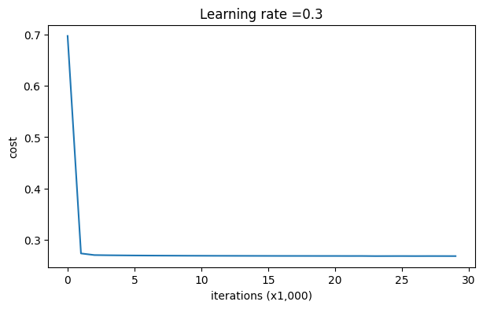
On the train set:
Accuracy: 0.9383886255924171
On the test set:
Accuracy: 0.93Congrats, the test set accuracy increased to 93%. You have saved the French football team!
You are not overfitting the training data anymore. Let’s plot the decision boundary.
plt.title("Model with L2-regularization")
axes = plt.gca()
axes.set_xlim([-0.75,0.40])
axes.set_ylim([-0.75,0.65])
plot_decision_boundary(lambda x: predict_dec(parameters, x.T), train_X, train_Y)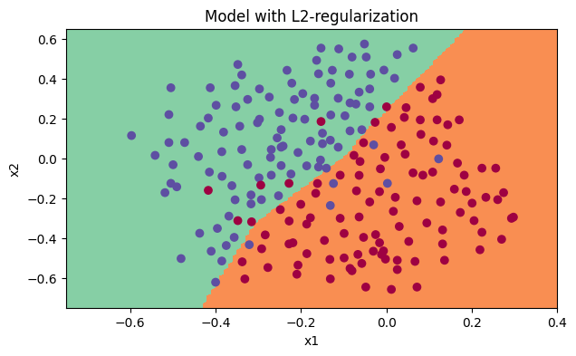
Observations: - The value of \(\lambda\) is a hyperparameter that you can tune using a dev set. - L2 regularization makes your decision boundary smoother. If \(\lambda\) is too large, it is also possible to “oversmooth”, resulting in a model with high bias.
What is L2-regularization actually doing?:
L2-regularization relies on the assumption that a model with small weights is simpler than a model with large weights. Thus, by penalizing the square values of the weights in the cost function you drive all the weights to smaller values. It becomes too costly for the cost to have large weights! This leads to a smoother model in which the output changes more slowly as the input changes.
What you should remember: the implications of L2-regularization on: - The cost computation: - A regularization term is added to the cost. - The backpropagation function: - There are extra terms in the gradients with respect to weight matrices. - Weights end up smaller (“weight decay”): - Weights are pushed to smaller values.
Finally, dropout is a widely used regularization technique that is specific to deep learning. It randomly shuts down some neurons in each iteration. Watch these two videos to see what this means!
At each iteration, you shut down (= set to zero) each neuron of a layer with probability \(1 - keep\_prob\) or keep it with probability \(keep\_prob\) (50% here). The dropped neurons don’t contribute to the training in both the forward and backward propagations of the iteration.
\(1^{st}\) layer: we shut down on average 40% of the neurons. \(3^{rd}\) layer: we shut down on average 20% of the neurons.
When you shut some neurons down, you actually modify your model. The idea behind drop-out is that at each iteration, you train a different model that uses only a subset of your neurons. With dropout, your neurons thus become less sensitive to the activation of one other specific neuron, because that other neuron might be shut down at any time.
### 13.1 - Forward Propagation with Dropout
### Exercise 6 - forward_propagation_with_dropout
Implement the forward propagation with dropout. You are using a 3 layer neural network, and will add dropout to the first and second hidden layers. We will not apply dropout to the input layer or output layer.
Instructions: You would like to shut down some neurons in the first and second layers. To do that, you are going to carry out 4 Steps: 1. In lecture, we dicussed creating a variable \(d^{[1]}\) with the same shape as \(a^{[1]}\) using np.random.rand() to randomly get numbers between 0 and 1. Here, you will use a vectorized implementation, so create a random matrix $D^{[1]} = [d^{1} d^{1} … d^{1}] $ of the same dimension as \(A^{[1]}\). 2. Set each entry of \(D^{[1]}\) to be 1 with probability (keep_prob), and 0 otherwise.
Hint: Let’s say that keep_prob = 0.8, which means that we want to keep about 80% of the neurons and drop out about 20% of them. We want to generate a vector that has 1’s and 0’s, where about 80% of them are 1 and about 20% are 0. This python statement:
X = (X < keep_prob).astype(int)
is conceptually the same as this if-else statement (for the simple case of a one-dimensional array) :
for i,v in enumerate(x):
if v < keep_prob:
x[i] = 1
else: # v >= keep_prob
x[i] = 0Note that the X = (X < keep_prob).astype(int) works with multi-dimensional arrays, and the resulting output preserves the dimensions of the input array.
Also note that without using .astype(int), the result is an array of booleans True and False, which Python automatically converts to 1 and 0 if we multiply it with numbers. (However, it’s better practice to convert data into the data type that we intend, so try using .astype(int).)
- Set \(A^{[1]}\) to \(A^{[1]} * D^{[1]}\). (You are shutting down some neurons). You can think of \(D^{[1]}\) as a mask, so that when it is multiplied with another matrix, it shuts down some of the values.
- Divide \(A^{[1]}\) by
keep_prob. By doing this you are assuring that the result of the cost will still have the same expected value as without drop-out. (This technique is also called inverted dropout.)
def forward_propagation_with_dropout(X, parameters, keep_prob = 0.5):
"""
Implements the forward propagation: LINEAR -> RELU + DROPOUT -> LINEAR -> RELU + DROPOUT -> LINEAR -> SIGMOID.
Arguments:
X -- input dataset, of shape (2, number of examples)
parameters -- python dictionary containing your parameters "W1", "b1", "W2", "b2", "W3", "b3":
W1 -- weight matrix of shape (20, 2)
b1 -- bias vector of shape (20, 1)
W2 -- weight matrix of shape (3, 20)
b2 -- bias vector of shape (3, 1)
W3 -- weight matrix of shape (1, 3)
b3 -- bias vector of shape (1, 1)
keep_prob - probability of keeping a neuron active during drop-out, scalar
Returns:
A3 -- last activation value, output of the forward propagation, of shape (1,1)
cache -- tuple, information stored for computing the backward propagation
"""
np.random.seed(1)
# retrieve parameters
W1 = parameters["W1"]
b1 = parameters["b1"]
W2 = parameters["W2"]
b2 = parameters["b2"]
W3 = parameters["W3"]
b3 = parameters["b3"]
# LINEAR -> RELU -> LINEAR -> RELU -> LINEAR -> SIGMOID
Z1 = np.dot(W1, X) + b1
A1 = relu(Z1)
#(≈ 4 lines of code) # Steps 1-4 below correspond to the Steps 1-4 described above.
# D1 = # Step 1: initialize matrix D1 = np.random.rand(..., ...)
# D1 = # Step 2: convert entries of D1 to 0 or 1 (using keep_prob as the threshold)
# A1 = # Step 3: shut down some neurons of A1
# A1 = # Step 4: scale the value of neurons that haven't been shut down
# YOUR CODE STARTS HERE
D1 = np.random.rand(A1.shape[0], A1.shape[1])
D1 = (D1 < keep_prob).astype(int)
A1 = np.multiply(A1, D1)
A1 = A1/keep_prob
# YOUR CODE ENDS HERE
Z2 = np.dot(W2, A1) + b2
A2 = relu(Z2)
#(≈ 4 lines of code)
# D2 = # Step 1: initialize matrix D2 = np.random.rand(..., ...)
# D2 = # Step 2: convert entries of D2 to 0 or 1 (using keep_prob as the threshold)
# A2 = # Step 3: shut down some neurons of A2
# A2 = # Step 4: scale the value of neurons that haven't been shut down
# YOUR CODE STARTS HERE
D2 = np.random.rand(A2.shape[0], A2.shape[1])
D2 = (D2 < keep_prob).astype(int)
A2 = np.multiply(A2, D2)
A2 = A2/keep_prob
# YOUR CODE ENDS HERE
Z3 = np.dot(W3, A2) + b3
A3 = sigmoid(Z3)
cache = (Z1, D1, A1, W1, b1, Z2, D2, A2, W2, b2, Z3, A3, W3, b3)
return A3, cachet_X, parameters = forward_propagation_with_dropout_test_case()
A3, cache = forward_propagation_with_dropout(t_X, parameters, keep_prob=0.7)
print ("A3 = " + str(A3))
forward_propagation_with_dropout_test(forward_propagation_with_dropout)A3 = [[0.36974721 0.00305176 0.04565099 0.49683389 0.36974721]]
All tests passed.### 13.2 - Backward Propagation with Dropout
### Exercise 7 - backward_propagation_with_dropout Implement the backward propagation with dropout. As before, you are training a 3 layer network. Add dropout to the first and second hidden layers, using the masks \(D^{[1]}\) and \(D^{[2]}\) stored in the cache.
Instruction: Backpropagation with dropout is actually quite easy. You will have to carry out 2 Steps: 1. You had previously shut down some neurons during forward propagation, by applying a mask \(D^{[1]}\) to A1. In backpropagation, you will have to shut down the same neurons, by reapplying the same mask \(D^{[1]}\) to dA1. 2. During forward propagation, you had divided A1 by keep_prob. In backpropagation, you’ll therefore have to divide dA1 by keep_prob again (the calculus interpretation is that if \(A^{[1]}\) is scaled by keep_prob, then its derivative \(dA^{[1]}\) is also scaled by the same keep_prob).
# GRADED FUNCTION: backward_propagation_with_dropout
def backward_propagation_with_dropout(X, Y, cache, keep_prob):
"""
Implements the backward propagation of our baseline model to which we added dropout.
Arguments:
X -- input dataset, of shape (2, number of examples)
Y -- "true" labels vector, of shape (output size, number of examples)
cache -- cache output from forward_propagation_with_dropout()
keep_prob - probability of keeping a neuron active during drop-out, scalar
Returns:
gradients -- A dictionary with the gradients with respect to each parameter, activation and pre-activation variables
"""
m = X.shape[1]
(Z1, D1, A1, W1, b1, Z2, D2, A2, W2, b2, Z3, A3, W3, b3) = cache
dZ3 = A3 - Y
dW3 = 1./m * np.dot(dZ3, A2.T)
db3 = 1./m * np.sum(dZ3, axis=1, keepdims=True)
dA2 = np.dot(W3.T, dZ3)
#(≈ 2 lines of code)
# dA2 = # Step 1: Apply mask D2 to shut down the same neurons as during the forward propagation
# dA2 = # Step 2: Scale the value of neurons that haven't been shut down
# YOUR CODE STARTS HERE
dA2 = D2*dA2
dA2 = dA2/keep_prob
# YOUR CODE ENDS HERE
dZ2 = np.multiply(dA2, np.int64(A2 > 0))
dW2 = 1./m * np.dot(dZ2, A1.T)
db2 = 1./m * np.sum(dZ2, axis=1, keepdims=True)
dA1 = np.dot(W2.T, dZ2)
#(≈ 2 lines of code)
# dA1 = # Step 1: Apply mask D1 to shut down the same neurons as during the forward propagation
# dA1 = # Step 2: Scale the value of neurons that haven't been shut down
# YOUR CODE STARTS HERE
dA1 = D1*dA1
dA1 = dA1/keep_prob
# YOUR CODE ENDS HERE
dZ1 = np.multiply(dA1, np.int64(A1 > 0))
dW1 = 1./m * np.dot(dZ1, X.T)
db1 = 1./m * np.sum(dZ1, axis=1, keepdims=True)
gradients = {"dZ3": dZ3, "dW3": dW3, "db3": db3,"dA2": dA2,
"dZ2": dZ2, "dW2": dW2, "db2": db2, "dA1": dA1,
"dZ1": dZ1, "dW1": dW1, "db1": db1}
return gradientst_X, t_Y, cache = backward_propagation_with_dropout_test_case()
gradients = backward_propagation_with_dropout(t_X, t_Y, cache, keep_prob=0.8)
print ("dA1 = \n" + str(gradients["dA1"]))
print ("dA2 = \n" + str(gradients["dA2"]))
backward_propagation_with_dropout_test(backward_propagation_with_dropout)dA1 =
[[ 0.36544439 0. -0.00188233 0. -0.17408748]
[ 0.65515713 0. -0.00337459 0. -0. ]]
dA2 =
[[ 0.58180856 0. -0.00299679 0. -0.27715731]
[ 0. 0.53159854 -0. 0.53159854 -0.34089673]
[ 0. 0. -0.00292733 0. -0. ]]
All tests passed.Let’s now run the model with dropout (keep_prob = 0.86). It means at every iteration you shut down each neurons of layer 1 and 2 with 14% probability. The function model() will now call: - forward_propagation_with_dropout instead of forward_propagation. - backward_propagation_with_dropout instead of backward_propagation.
parameters = model(train_X, train_Y, keep_prob = 0.86, learning_rate = 0.3)
print ("On the train set:")
predictions_train = predict(train_X, train_Y, parameters)
print ("On the test set:")
predictions_test = predict(test_X, test_Y, parameters)Cost after iteration 0: 0.6543912405149825/Users/vitvly/c/lnu/2023-2024.2/dl_nlp/dl_lab3/reg_utils.py:236: RuntimeWarning: divide by zero encountered in log
logprobs = np.multiply(-np.log(a3),Y) + np.multiply(-np.log(1 - a3), 1 - Y)
/Users/vitvly/c/lnu/2023-2024.2/dl_nlp/dl_lab3/reg_utils.py:236: RuntimeWarning: invalid value encountered in multiply
logprobs = np.multiply(-np.log(a3),Y) + np.multiply(-np.log(1 - a3), 1 - Y)Cost after iteration 10000: 0.0610169865749056
Cost after iteration 20000: 0.060582435798513114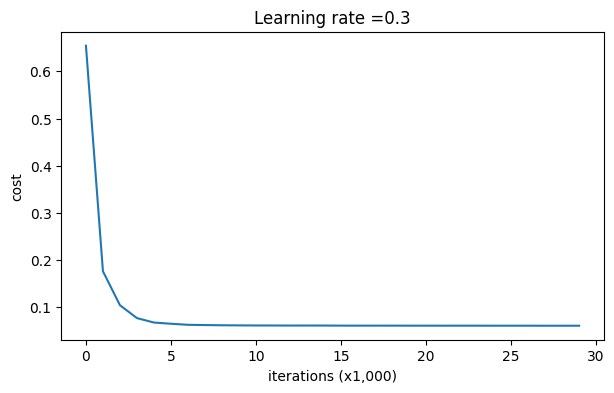
On the train set:
Accuracy: 0.9289099526066351
On the test set:
Accuracy: 0.95Dropout works great! The test accuracy has increased again (to 95%)! Your model is not overfitting the training set and does a great job on the test set. The French football team will be forever grateful to you!
Run the code below to plot the decision boundary.
plt.title("Model with dropout")
axes = plt.gca()
axes.set_xlim([-0.75,0.40])
axes.set_ylim([-0.75,0.65])
plot_decision_boundary(lambda x: predict_dec(parameters, x.T), train_X, train_Y)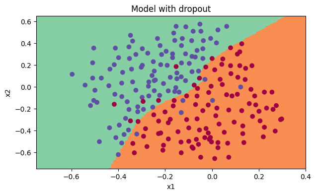
Note: - A common mistake when using dropout is to use it both in training and testing. You should use dropout (randomly eliminate nodes) only in training. - Deep learning frameworks like TensorFlow, PaddlePaddle, Keras or caffe come with a dropout layer implementation. Don’t stress - you will soon learn some of these frameworks.
What you should remember about dropout: - Dropout is a regularization technique. - You only use dropout during training. Don’t use dropout (randomly eliminate nodes) during test time. - Apply dropout both during forward and backward propagation. - During training time, divide each dropout layer by keep_prob to keep the same expected value for the activations. For example, if keep_prob is 0.5, then we will on average shut down half the nodes, so the output will be scaled by 0.5 since only the remaining half are contributing to the solution. Dividing by 0.5 is equivalent to multiplying by 2. Hence, the output now has the same expected value. You can check that this works even when keep_prob is other values than 0.5.
Here are the results of our three models:
<td>
3-layer NN without regularization
</td>
<td>
95%
</td>
<td>
91.5%
</td>
<tr>
<td>
3-layer NN with L2-regularization
</td>
<td>
94%
</td>
<td>
93%
</td>
</tr>
<tr>
<td>
3-layer NN with dropout
</td>
<td>
93%
</td>
<td>
95%
</td>
</tr>| model | train accuracy | test accuracy |
Note that regularization hurts training set performance! This is because it limits the ability of the network to overfit to the training set. But since it ultimately gives better test accuracy, it is helping your system.
Congratulations for finishing this assignment! And also for revolutionizing French football. :-)
What we want you to remember from this notebook: - Regularization will help you reduce overfitting. - Regularization will drive your weights to lower values. - L2 regularization and Dropout are two very effective regularization techniques.